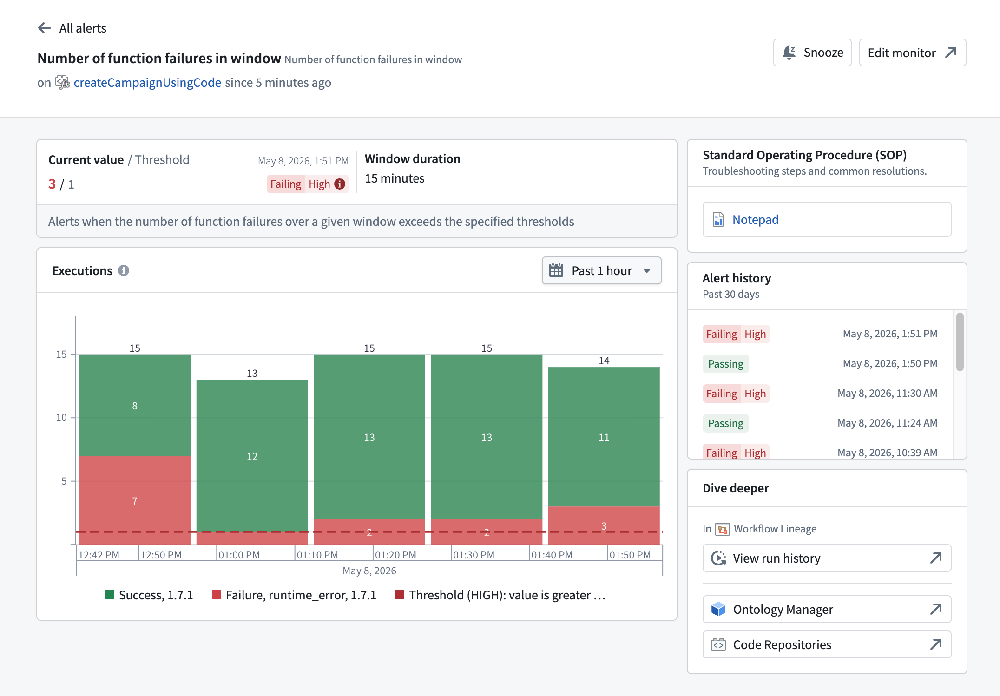
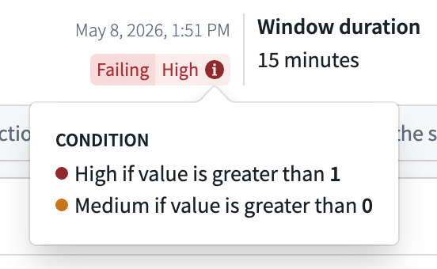

The alert debug page provides a detailed diagnostic view for a monitor rule firing on a specific resource. To access the alert debug page, navigate to the Troubleshoot alerts tab in the Data Health application and select View details on an alert.
:::callout{theme="neutral"} The alert debug page currently supports function and action type resources with single-condition monitoring rules. Composite monitoring rules are not supported. Support for additional rule and resource types is planned. :::

The page header identifies the monitor rule and provides quick actions:
on <resource> since <time>, indicating the resource that the rule fired on and how long the rule has been in its current state.Use the back arrow to return to the Troubleshoot alerts tab.
The metrics section displays the current state of the monitored metric:
Passing. When the rule is firing, the badge displays Failing paired with the configured severity level (Low, Medium, or High).The monitor description appears below the metric values.
Hover over the condition tag to view a breakdown of all severity conditions configured on the rule.

When a monitor rule has a Standard Operating Procedure (SOP) attached, the SOP card displays a link to the associated Notepad resource. The card provides quick access to troubleshooting steps and common resolutions documented for the rule.
A monitor rule can surface up to two SOPs, each displayed as a link to its associated Notepad resource:
The chart section displays the monitored metric values over time. The chart includes a description of the metric being tracked. The description varies by resource type (function or action type).
Use the date range picker above the chart to adjust the time window, or interact directly with the chart.
The alert history section displays a timeline of monitor status transitions for this rule over the past 30 days. Each entry shows the status badge and the timestamp of the transition. Scroll down to load additional history.
The Dive deeper section provides links for further investigation of the monitored resource:
The alert debug page only provides detailed diagnostics for function and action type resources with single-condition monitoring rules. If you open the page for a composite monitoring rule or a rule on another resource type, you are redirected to the Troubleshoot alerts tab. That tab provides high-level alert information for these rules.